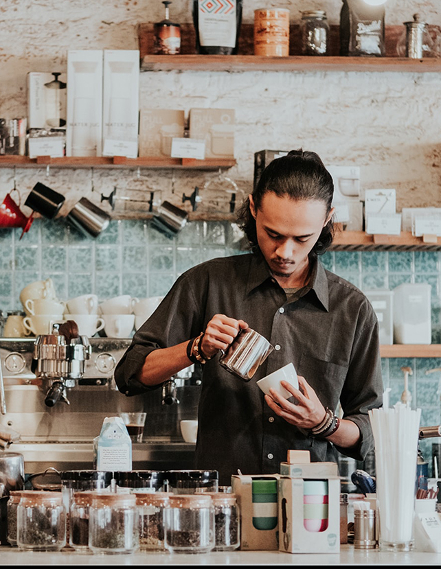
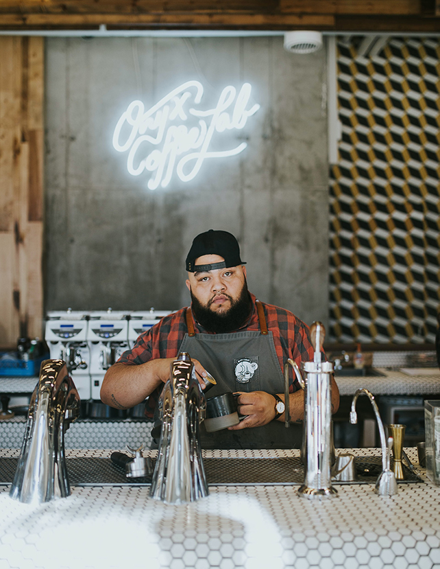
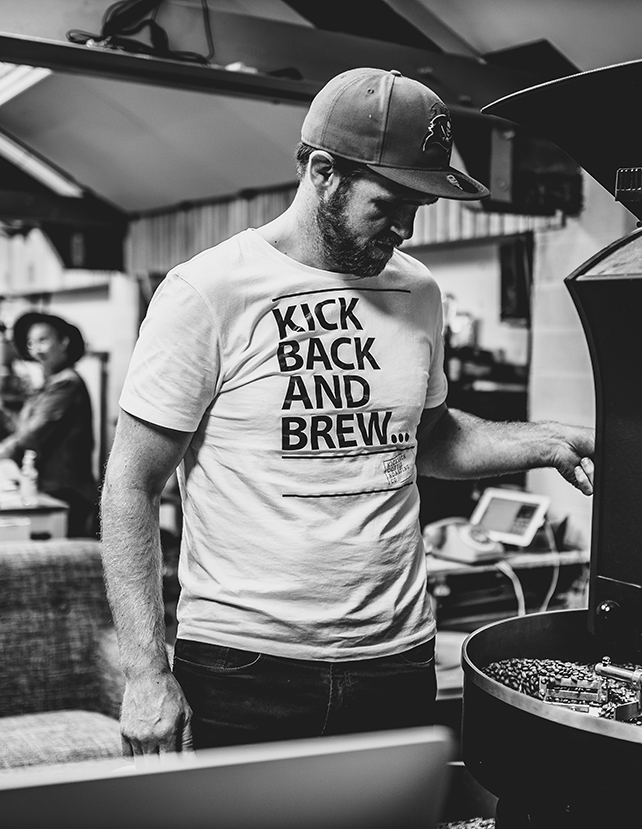

It all started...
  ...with an Elf, a Halfling and a Human
Jason "Smash" Cameron, Joseph "Crash" Kite, and John "Nosa" Lott were Dungeon Masters who both loved playing Role Playing Games and Roasting their own coffee. One night the group formed an epic party, "The D&D Baristas." With their wisdom, roasting magic and brute creative powers they built Coffee and Games Cafe to be a safe place for all gamers to enjoy their adventures and a beautiful cup of dark caffeine richness. Their only thought:
"This is obvious a dead end...
With many enemies...
Lots of traps...
Let's explore it!"